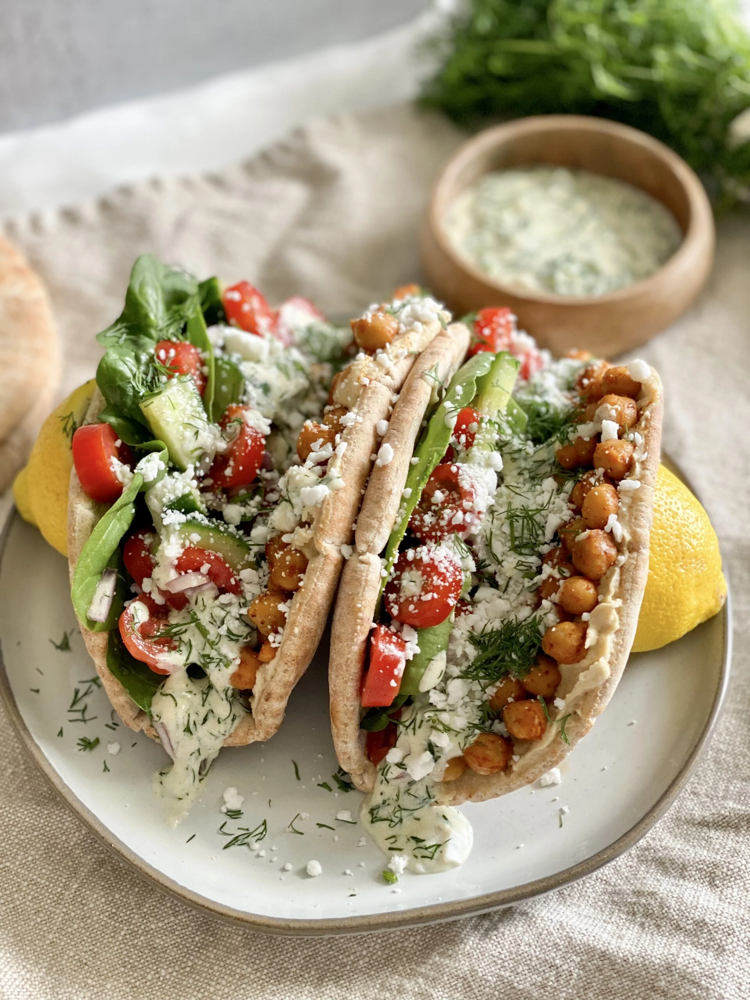

Stuffed Pita with Spiced Chickpeas & Halloumi

Warm pita pockets packed with crispy spiced chickpeas, golden halloumi, fresh veg and a cool garlicky yogurt sauce.
Prep time: 15 minutes. Cook time: 15 minutes. Total: about 30 minutes. Serves 4 (2 pita halves each).
Ingredients
- 4 pita breads400 grams tinned chickpeas, drained and rinsed
- 3 tablespoons olive oil
- 1 teaspoons ground cumin
- 1 teaspoons smoked paprika
- ground coriander
- salt
- 225 grams halloumi, sliced into 1cm slabs
- 200 grams Greek yogurt
- 1 garlic clove, finely grated
- lemon juice
- dried mint
- cucumber, diced
- 2 ripe tomatoes, diced
- red onion, thinly sliced
- handful fresh parsley, chopped
- baby spinach or lettuce leaves
- black pepper
Process
- Make the yogurt sauce: Stir together 200 grams Greek yogurt, 1 garlic clove, finely grated, 1 tablespoons lemon juice, 0.5 teaspoons dried mint and a pinch of the 0.3 teaspoons black pepper. Taste, adjust seasoning, and chill in the fridge while you cook.
- Prep the salad: Combine 0.5 cucumber, diced, 2 ripe tomatoes, diced, 0.5 red onion, thinly sliced and 1 handful fresh parsley, chopped in a bowl. Add a pinch of salt and a squeeze of lemon if you like. Set aside.
- Dry the chickpeas: Pat the 400 grams tinned chickpeas, drained and rinsed thoroughly dry with a clean tea towel or kitchen paper. Dry chickpeas crisp up much better.
- Crisp the spiced chickpeas: Heat 2 tbsp of the 3 tablespoons olive oil, divided in a large frying pan over medium-high heat. Add the chickpeas and fry, stirring occasionally, until golden and slightly crisp. Add 1 teaspoons ground cumin, 1 teaspoons smoked paprika, 0.5 teaspoons ground coriander and 0.8 teaspoons salt, toss well and cook 1 more minute. Tip into a bowl.
- Fry the halloumi: Wipe the pan, add the remaining oil and heat over medium-high. Fry the 225 grams halloumi, sliced into 1cm slabs slices for 1 to 2 minutes per side until deeply golden. Remove and cut into bite-size strips.
- Warm the pitas: Warm the 4 pita breads in a toaster, dry pan or oven for about 30 to 60 seconds per side until soft and puffy. Cut each in half to open into pockets.
- Stuff and serve: Spread a spoonful of yogurt sauce inside each pocket, add a few 60 grams baby spinach or lettuce leaves, then fill with chickpeas, halloumi and the tomato-cucumber salad. Finish with another drizzle of yogurt sauce and serve immediately.
Notes
Variations: swap halloumi for crumbled feta or pan-fried paneer. For a vegan version, use plant-based yogurt and skip the halloumi in favour of roasted aubergine or falafel. Add hummus, pickled chillies or a sprinkle of sumac for extra flavour. Leftover chickpeas keep in the fridge for 2 days but are crispiest fresh.